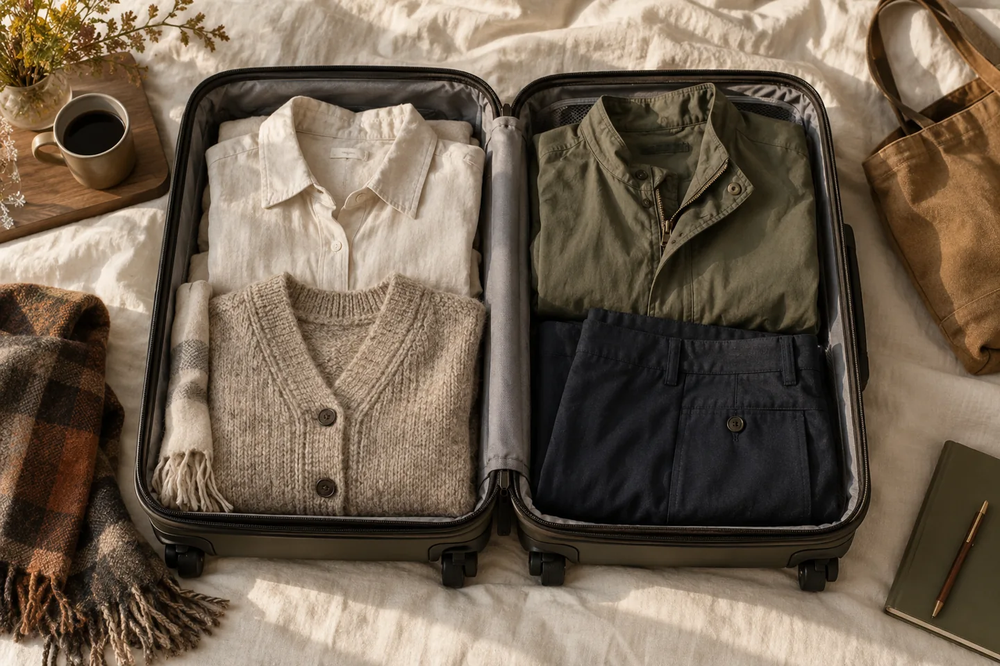
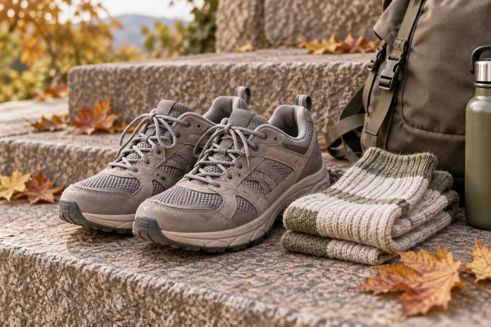
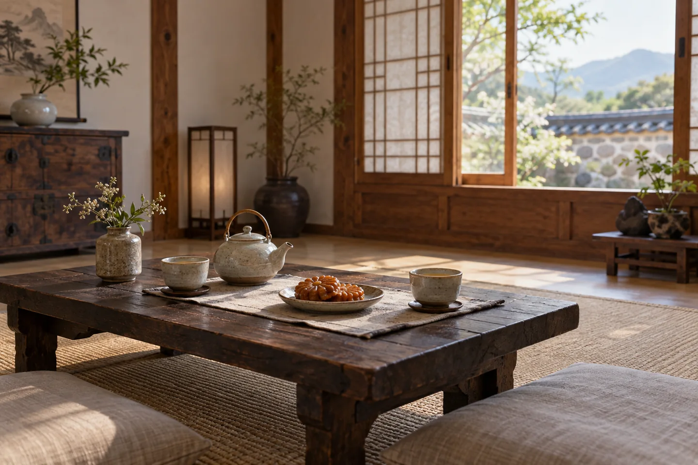

A November trip that includes Seoul and Busan raises a useful packing question: will the clothes chosen for one city work in the other? Start with the seasonal pattern, then check the forecast for each stop close to departure.
Compare the same month in both cities.

The Korea Tourism Organization’s climate guide lists the following November averages. They describe a seasonal pattern; they do not predict the weather on a particular day.
| City | Average high | Average low |
|---|---|---|
| Seoul | 11.9°C | 3.5°C |
| Busan | 16.6°C | 8.3°C |
In this table, Busan is warmer by about five degrees at both ends of the day. That comparison is a reason to check both destinations separately, rather than choosing an outfit from a single Korea-wide temperature. The source does not specify the averaging period beside the table.
VISITKOREA — Climate & Seasons ↗
Build a suitcase that can change with the day.

Lay out a few pieces you can wear together, then remove one layer without having to change everything else. A shirt, a warm middle layer and an outer jacket can be a useful starting point. Choose their actual warmth from the forecast and how much time you expect to spend outside.
Keep the layer you may need on arrival near the top of your bag. If the first day involves an early departure or a late return, check those hours as well as the daytime high. The average low is not a promise about the coldest conditions you might meet.
Match the walking to the conditions.

Use shoes you already find comfortable. Before a longer outdoor stretch, check the forecast and the route’s current conditions. A city itinerary can still involve exposed waiting areas, stairs or a longer walk than expected.
Keep an alternative stop nearby in your plan. If the weather changes, shortening one walk is easier when the rest of the day is not tied to a chain of fixed reservations. These are planning suggestions, not a claim that any particular route will be suitable on your date.
Give the day a place to pause.

Mark one indoor option near the part of the city you plan to explore, such as a museum or a café that interests you. Confirm its opening details separately. Leave enough space in the schedule to stop without having to rush through the next place.
Before leaving your accommodation, check the forecast again for the city you are actually visiting that day. Add the next destination when you are travelling between cities. Weather preparation works best as a small daily decision, not a single packing choice made weeks earlier.
Korea Meteorological Administration — check current forecasts ↗
Seasonal figures checked November 8, 2026 against the Korea Tourism Organization’s Climate & Seasons page. This article is not a live forecast. Packing and pacing ideas are editorial suggestions. All four illustrations are reused AI-generated assets and do not document a trip, current weather or actual facilities.